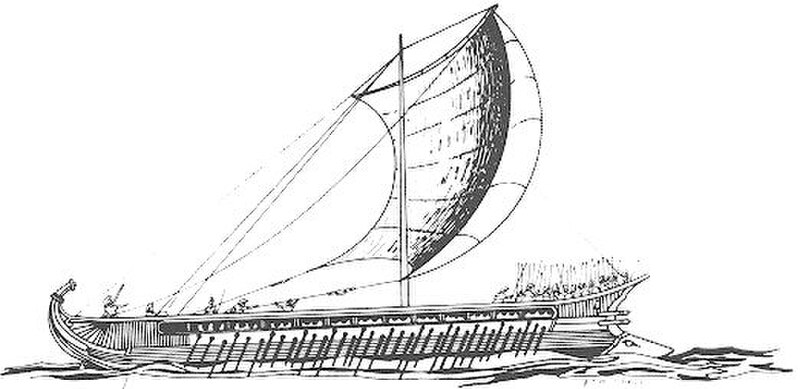

아테네인들은 영웅 테세우스의 배를 기념하며 오래 보존하고 있었습니다. 썩은 판자는 하나씩 새것으로 갈아 끼웠죠. 그러다 보니 수백 년 뒤에는 — 처음 판자가 단 한 조각도 남지 않았습니다. 그 배는, 여전히 ‘테세우스의 배’일까요?
사실 우리 몸의 세포도 끊임없이 새것으로 바뀝니다. 피부는 한 달, 혈액은 4개월, 뼈는 약 10년에 거의 새것이 되죠. 물질로 보면 매년 다른 사람인 셈인데, 누구도 그렇게 느끼지 않습니다.
그러니까 같은 것이라는 느낌은 부품의 합이 아니라, 이어진 패턴과 흐름 어딘가에 있는 듯합니다 — 적어도 우리 자신에 대해서는.